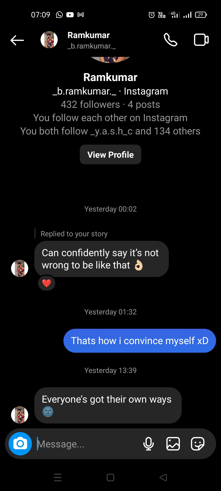
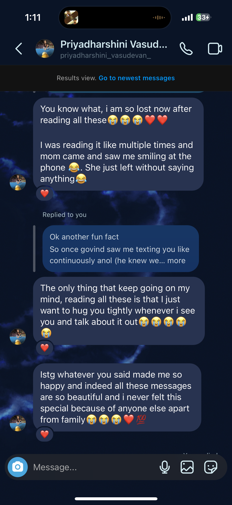
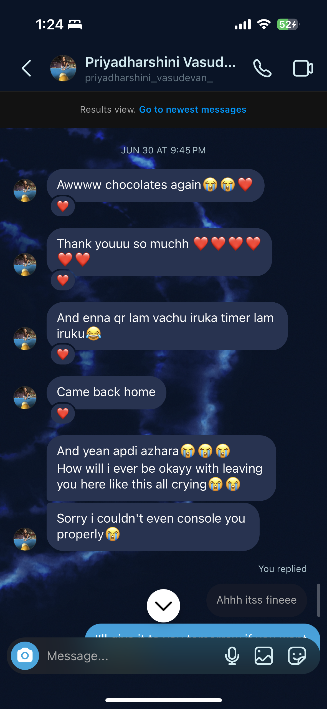

Hello Priyadharshini aka pd aka… sounds familiar, doesnt it? We back at it again :p
PAUSE PAUSE PAUSE! IMPORTANT! Just scroll the whole thing once and check if all the images have loaded, since it requires a lot of memory, it might not load it all.
For a better unhindered reading experience, CLICK HERE
Sorry for the inconvenience caused xD
Thank youuuuu.
The last time I wrote something like this was… some 6 months ago?
“In short, the past 6 months has been a fairytale, a beautiful chapter, something I never saw coming and something I will never forget and regret”The last time I wrote this was me expressing how I felt talking to you back and forth for 6 months.
6 months down the line and I still get to talk to you daily. Back when I actually wrote that, I wouldnt have guessed that I’d be able to write something like this again, im so happy that I still get to write it to the same person, and I get to have that person for myself as well.
(Will be referencing a lot from the previous one)
You? You are my HAPPPIESTTTT place, the BIGGEST white flag, I think about you ALLLLL THE TIME, the girl of my dreams who I wish to marry for how she makes me feel every second of the day.
Kind of out of content as I have gained courage to explicitly express how I feel about you while we text :p
And yes, you should keep this protein shaker, it has PEEDEE written all over it. It did its part of keeping me awake to text you, best thing ever. (CAUTION: DO NOT USE IT OR SMELL IT, IT REEKS)
Here are some screenshots I was reading (and tearing up to) 
(lol, I could talk to girls ig damn)

I still remember the exact 10 seconds of what my eye had captured looking at you in that saree and TILL date I
haven’t seen anything more beautiful than that.
A small part of me was jealous that you were dating back then ( was conveniently in the gym when you texted that
:p )
So glad you wanted to remain friends.
Still waiting for you to get me food from currents stall :(

the first time we texted all night?
“Time flew talking to you”
Time did fly innit?
(minor classes lol)

“INSANT no”
I was so madly in love with you, what do you expect me to say? Of course its going to be a no. All I ever wanted
was you. I mean, you didnt know that so its not your fault.
If you had asked me out, I would be sitting on your lap the next second. Thats how BADLY I wished I was yours.
“Pinnadi thirinju fall panni love pannanum”
Cant put it better. Two words of “strong” isnt enough to gauge the strength of what I have towards you. I know
what it feels like now and its the most beautiful feeling ever.
Couldnt keep it to myself I guess :p
It was never “appo appo”, it was epovume.
Modesty ig lol.
Reading whatever you sent is making me tear up right now but whatever you mentioned about me of how I was towards you, something that I didnt have control over.
Kaadhal ennai ketka villai
Ketkadhuhu kaadhal illai
Ig :)
Kinda funny reading these two messages lol Like come on ram, just tell her you love her so much and she means so much to you and you want marry her and be with her for the rest of your life.
I wish I could tell you back then how much I fell for you but there was something in me that couldnt tell it directly (lightah scared and shy) I was SO in love with you when typing those messages out.
I wouldnt have shown my actual reaction back then but behind the screen, you had no idea how badly I wanted to hug you as well and tell it to you irl about how much I have fallen for you and wanted to be yours.
chocolates was the last thing I wanted you to react to on this day :p
The timer in the qr was like a timer in my heart, waiting for you to read it.
“Who else but you?”
ONLY you. It was all for you only. It was me not able to take the fact that you are going away from me.
No words can explain what this felt like. I was hoping youd reply as soon as the timer went off but seems like both of us slept off.
I am so used to dreaming about us and about how we would look good together and all that but this, right after I woke up, its just too beautiful.
I was hoping youd reply as soon as the timer went off but seems like both of us slept off.What was going through my mind? “Is this priyadharshini? After 6 months of talking, multiple attempts of trying to crash into her, constantly thinking about her, the same one from pongal who looked cute, white kurti one outside gym and at the bus stop? The one who I had fallen for so hard? Is she telling all this?
It is Priyadharshini Vasud… in her white kurti dp.”
Truly a fairytale. You always tell me how our life is like Jim and Pam. I mean, I didnt really know what that meant, but thanks to my gulti roomie, I have watched enough office to understand where that came from.
I didnt really get to be by you like how Jim was always with Pam but whenever I saw Jim, I could see myself in him, I could see how much he loved her but couldnt express it. And how he waited for Pam.
Going through the old convos made me tear up a lot, I could hear my heart crying for every line. Crying mostly because it didnt have the courage to tell how much it wanted you. My heart still remembers how it felt for every text.
Priyadharshini… no sorry,
Peedee, my peedee, I wish I was by your side right now and could tell you how much I love you and have fallen for you. Just like Jim and Pam, I would love to share the stage of life with you someday.
I LOVE YOU SO MUCH PEEEDEEEEEEEEE!
Happy Valendtine's Dayyyyyy
With LOTSSSSSS of LOVEEEEEE,
Only YOURS,
CUTIEEEE